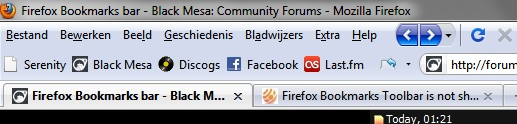

I’m Belgian, actually  It looks different because I rearranged the layout.
It looks different because I rearranged the layout.
That seems to be a completely different problem, bob, but thanks.
Again, the toolbar is there, it’s just getting reduced to a dropdown menu.
When I edit the interface, or even if I just enter the Customize menu without changing anything, the bookmarks show up. They just disappear again after restarting Firefox though.
It’s probably because of the address bar being in the Bookmarks Toolbar, but I’ve always done it this way without any problems. Basically, the Address Bar is forcing itself on the Bookmars Toolbar, so to speak.
This is what it should look like.
Edit: found a solution:
Go to X:\Users[Profile]\AppData\Roaming\Mozilla\Firefox\Profiles[numbers].default\chrome and edit userChrome.css.
Add the following code:
#bookmarksBarContent .bookmark-item {
visibility: visible !important;
}
Thanks for the help
